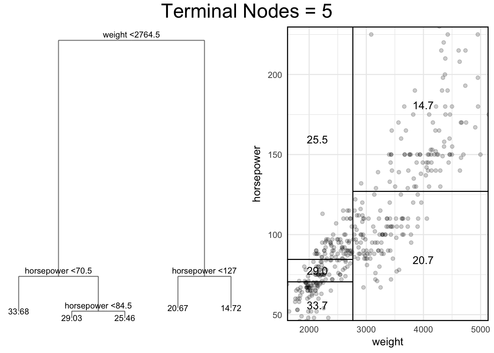
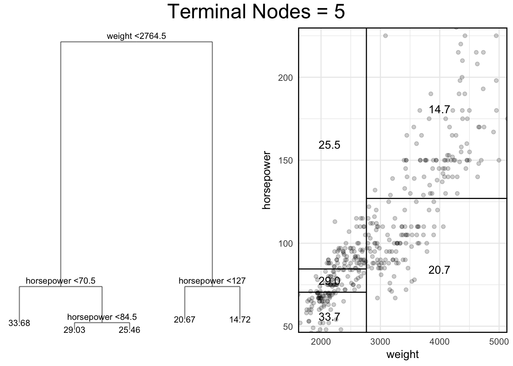
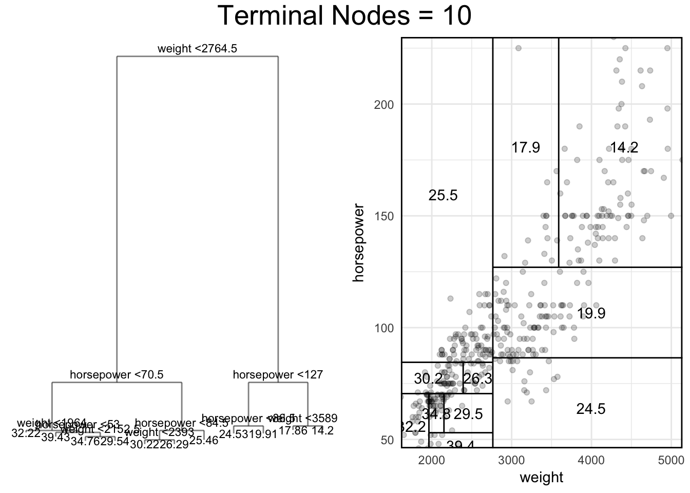
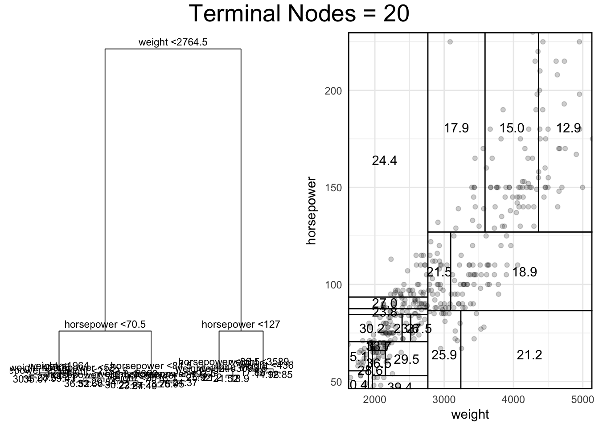
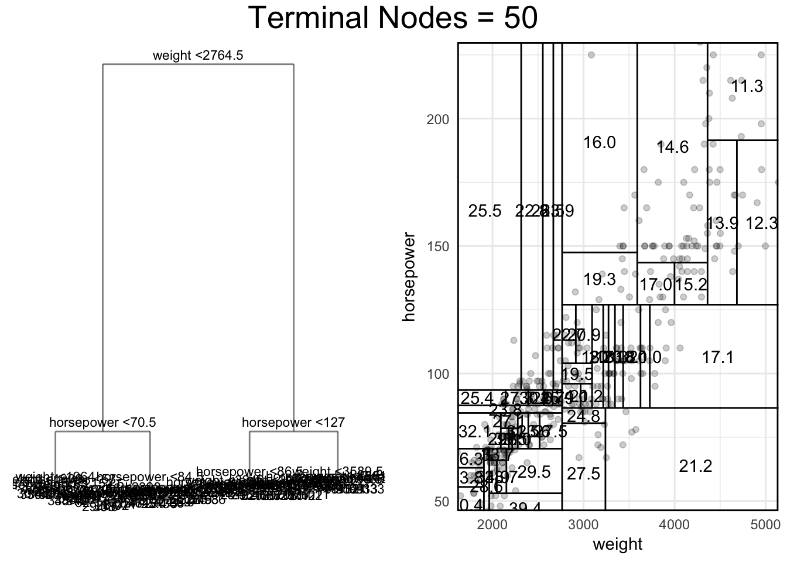
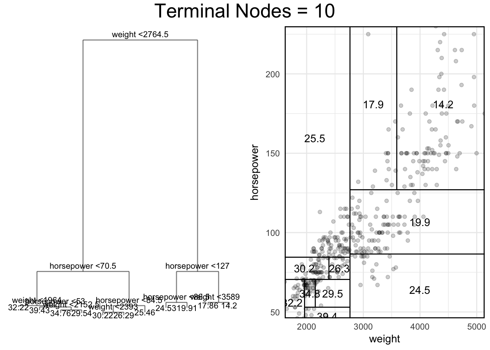
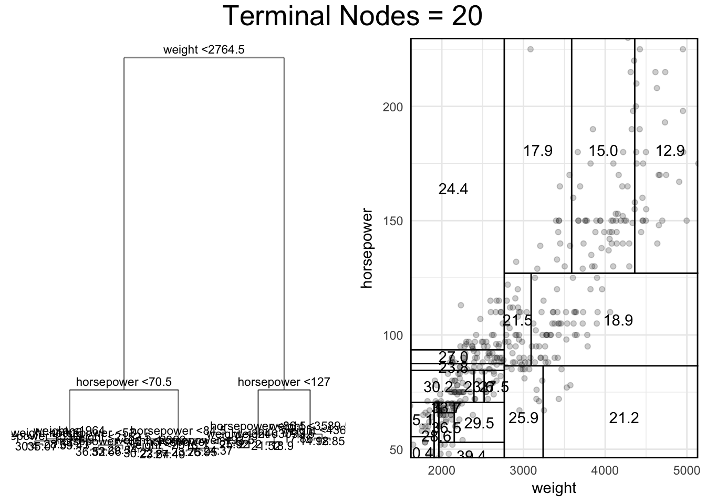
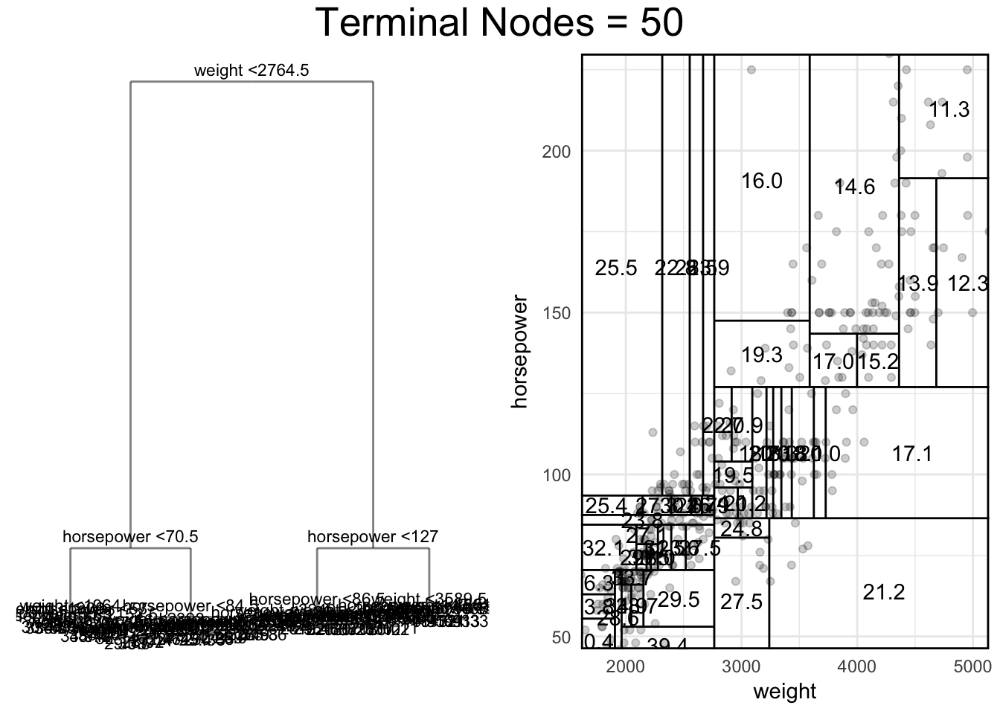
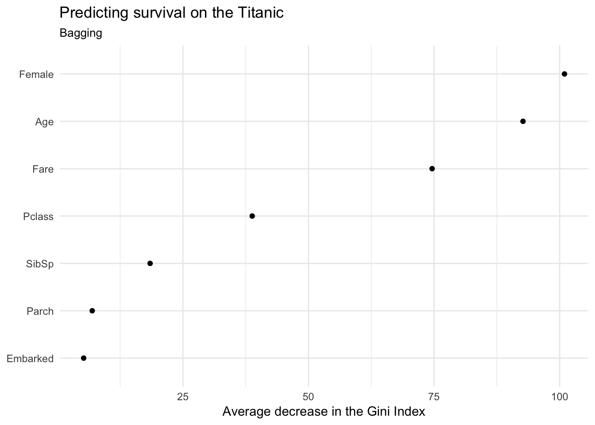
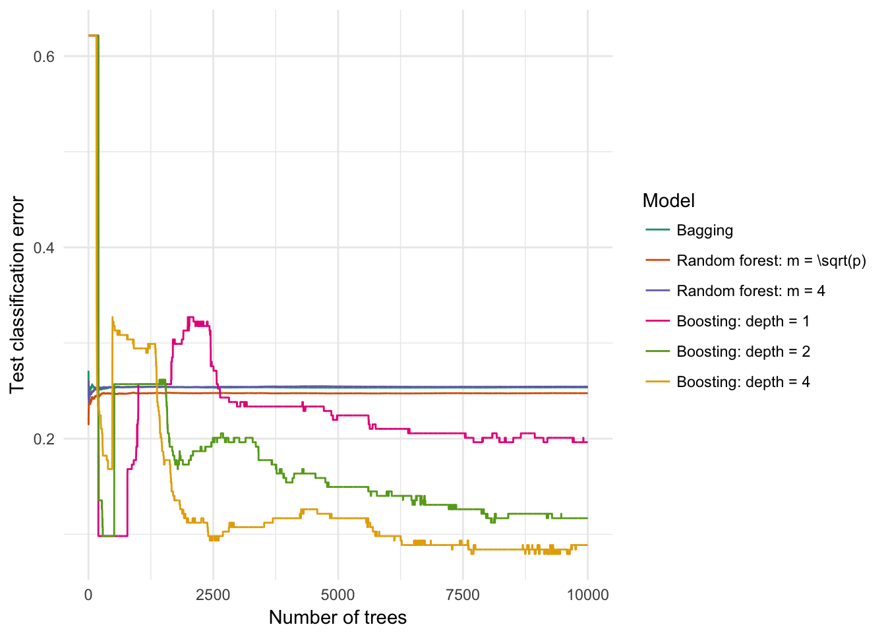

Statistical learning: tree-based methods
MACS 30100 - Perspectives on Computational Modeling
Objectives
- Define a decision tree
- Identify the steps to estimating a decision tree
- Demonstrate how to estimate a decision tree for regression and classification problems
- Define and estimate bagging models
- Define and estimate random forest models
- Define and estimate boosting models
library(tidyverse)
library(forcats)
library(broom)
library(modelr)
library(tree)
library(randomForest)
library(stringr)
library(ISLR)
library(gridExtra)
library(grid)
library(titanic)
library(rcfss)
library(pROC)
library(gbm)
# to get the tree graphs with the labels and values, use the forked
# version of ggdendro
# devtools::install_github("bensoltoff/ggdendro")
library(ggdendro)
options(digits = 3)
set.seed(1234)
theme_set(theme_minimal())err.rate.rf <- function(model, data) {
data <- as_tibble(data)
response <- as.character(model$terms[[2]])
pred <- predict(model, newdata = data, type = "response")
actual <- data[[response]]
return(mean(pred != actual, na.rm = TRUE))
}Decision trees


Decision trees are intuitive concepts for making decisions. They are also useful methods for regression and classification. They work by splitting the observations into a number of regions, and predictions are made based on the mean or mode of the training observations in that region.
Regression trees
Single predictor
Let’s first consider a basic linear regression model of the relationship between horsepower and highway mileage from the Auto dataset.
# add 95% confidence intervals to fitted values from augment()
add_ci <- function(df_augment) {
df_augment %>%
mutate(.fitted.low = .fitted - 1.96 * .se.fit,
.fitted.high = .fitted + 1.96 * .se.fit)
}
# draw 95% confidence interval plot using results of add_ci()
plot_ci <- function(df_ci, x){
ggplot(df_ci, aes_string(x, ".fitted")) +
geom_line() +
geom_line(aes(y = .fitted.low), linetype = 2) +
geom_line(aes(y = .fitted.high), linetype = 2)
}
auto_lm <- glm(mpg ~ horsepower, data = Auto)
augment(auto_lm, newdata = data_grid(Auto, horsepower)) %>%
add_ci() %>%
plot_ci("horsepower") +
geom_point(data = Auto, aes(y = mpg), alpha = .2) +
labs(title = "Linear model of highway mileage",
x = "Horsepower",
y = "Highway mileage")
As we recall, a strictly linear model is a poor fit for the data since the relationship actually appears to be quadratic. But unless we relax our linear assumption, this is the best OLS model we can estimate.
Let’s compare this instead to a decision tree using horsepower to predict highway mileage. Decision trees work through a process of stratification:
- Divide the predictor space (\(X_1, X_2, \dots, X_p\)) into \(J\) distinct and non-overlapping regions \(R_1, R_2, \dots, R_J\).
- For every observation in region \(R_j\), we make the same prediction which is the mean of the response variable \(Y\) for all observations in \(R_j\).
This process is iterative: during the first iteration, we segment the predictor space \(X\) into two regions \(R_1, R_2\). In the context of a decision tree with a single predictor, that process results in decision trees like the following:
# hackish function to get line segment coordinates for ggplot
partition.tree.data <- function (tree, label = "yval", add = FALSE, ordvars, ...)
{
ptXlines <- function(x, v, xrange, xcoord = NULL, ycoord = NULL,
tvar, i = 1L) {
if (v[i] == "<leaf>") {
y1 <- (xrange[1L] + xrange[3L])/2
y2 <- (xrange[2L] + xrange[4L])/2
return(list(xcoord = xcoord, ycoord = c(ycoord, y1,
y2), i = i))
}
if (v[i] == tvar[1L]) {
xcoord <- c(xcoord, x[i], xrange[2L], x[i], xrange[4L])
xr <- xrange
xr[3L] <- x[i]
ll2 <- Recall(x, v, xr, xcoord, ycoord, tvar, i +
1L)
xr <- xrange
xr[1L] <- x[i]
return(Recall(x, v, xr, ll2$xcoord, ll2$ycoord, tvar,
ll2$i + 1L))
}
else if (v[i] == tvar[2L]) {
xcoord <- c(xcoord, xrange[1L], x[i], xrange[3L],
x[i])
xr <- xrange
xr[4L] <- x[i]
ll2 <- Recall(x, v, xr, xcoord, ycoord, tvar, i +
1L)
xr <- xrange
xr[2L] <- x[i]
return(Recall(x, v, xr, ll2$xcoord, ll2$ycoord, tvar,
ll2$i + 1L))
}
else stop("wrong variable numbers in tree.")
}
if (inherits(tree, "singlenode"))
stop("cannot plot singlenode tree")
if (!inherits(tree, "tree"))
stop("not legitimate tree")
frame <- tree$frame
leaves <- frame$var == "<leaf>"
var <- unique(as.character(frame$var[!leaves]))
if (length(var) > 2L || length(var) < 1L)
stop("tree can only have one or two predictors")
nlevels <- sapply(attr(tree, "xlevels"), length)
if (any(nlevels[var] > 0L))
stop("tree can only have continuous predictors")
x <- rep(NA, length(leaves))
x[!leaves] <- as.double(substring(frame$splits[!leaves, "cutleft"],
2L, 100L))
m <- model.frame(tree)
if (length(var) == 1L) {
x <- sort(c(range(m[[var]]), x[!leaves]))
if (is.null(attr(tree, "ylevels")))
y <- frame$yval[leaves]
else y <- frame$yprob[, 1L]
y <- c(y, y[length(y)])
if (add) {
# lines(x, y, type = "s", ...)
}
else {
a <- attributes(attr(m, "terms"))
yvar <- as.character(a$variables[1 + a$response])
xo <- m[[yvar]]
if (is.factor(xo))
ylim <- c(0, 1)
else ylim <- range(xo)
# plot(x, y, ylab = yvar, xlab = var, type = "s", ylim = ylim,
# xaxs = "i", ...)
}
data_frame(x = x, y = y)
}
else {
if (!missing(ordvars)) {
ind <- match(var, ordvars)
if (any(is.na(ind)))
stop("unmatched names in vars")
var <- ordvars[sort(ind)]
}
lab <- frame$yval[leaves]
if (is.null(frame$yprob))
lab <- format(signif(lab, 3L))
else if (match(label, attr(tree, "ylevels"), nomatch = 0L))
lab <- format(signif(frame$yprob[leaves, label],
3L))
rx <- range(m[[var[1L]]])
rx <- rx + c(-0.025, 0.025) * diff(rx)
rz <- range(m[[var[2L]]])
rz <- rz + c(-0.025, 0.025) * diff(rz)
xrange <- c(rx, rz)[c(1, 3, 2, 4)]
xcoord <- NULL
ycoord <- NULL
xy <- ptXlines(x, frame$var, xrange, xcoord, ycoord,
var)
xx <- matrix(xy$xcoord, nrow = 4L)
yy <- matrix(xy$ycoord, nrow = 2L)
return(list(data_frame(xmin = xx[1L,],
ymin = xx[2L,],
xmax = xx[3L,],
ymax = xx[4L,]),
data_frame(x = yy[1L,],
y = yy[2L,],
label = lab)))
# if (!add)
# plot(rx, rz, xlab = var[1L], ylab = var[2L], type = "n",
# xaxs = "i", yaxs = "i", ...)
# segments(xx[1L, ], xx[2L, ], xx[3L, ], xx[4L, ])
# text(yy[1L, ], yy[2L, ], as.character(lab), ...)
}
}# estimate model
auto_tree <- tree(mpg ~ horsepower, data = Auto,
control = tree.control(nobs = nrow(Auto),
mindev = 0))
mod <- prune.tree(auto_tree, best = 2)
# plot tree
tree_data <- dendro_data(mod)
ptree <- ggplot(segment(tree_data)) +
geom_segment(aes(x = x, y = y, xend = xend, yend = yend),
alpha = 0.5) +
geom_text(data = label(tree_data),
aes(x = x, y = y, label = label_full), vjust = -0.5, size = 3) +
geom_text(data = leaf_label(tree_data),
aes(x = x, y = y, label = label), vjust = 0.5, size = 3) +
theme_dendro()
# plot region space
preg <- ggplot(Auto, aes(horsepower, mpg)) +
geom_point(alpha = .2) +
geom_step(data = partition.tree.data(mod), aes(x, y), size = 1.5) +
geom_vline(data = partition.tree.data(mod), aes(xintercept = x), linetype = 2) +
coord_cartesian(xlim = c(min(Auto$horsepower), max(Auto$horsepower)),
ylim = c(min(Auto$mpg), max(Auto$mpg)),
expand = FALSE) +
theme(panel.border = element_rect(fill = NA, size = 1))
# display plots side by side
grid.arrange(ptree, preg, ncol = 2,
top = textGrob(str_c("Terminal Nodes = ", ceiling(length(mod$frame$yval) / 2)),
gp = gpar(fontsize = 20)))
On the left is the decision tree after the first iteration, and on the right is the decision tree estimation of the relationship between horsepower and highway mileage. The tree consists of three different components:
- Each outcome is a terminal node or a leaf
- Splits occur at internal nodes
- The segments connecting each node are called branches
This model has two terminal nodes (29.038 and 17.854), one internal node (horsepower \(<93.5\)), and two branches. For observations with horsepower \(<93.5\), the model estimates highway mileage of 29.038. For observations with horsepower \(>93.5\), the model estimates highway mileage of 17.854. The resulting relationship “curve” (see right) looks like a step function. Each segment of the function is the mean() of the observations inside that region.
If we proceed to the next iteration, the decision tree segments \(R_1\) further.
mod <- prune.tree(auto_tree, best = 3)
# plot tree
tree_data <- dendro_data(mod)
ptree <- ggplot(segment(tree_data)) +
geom_segment(aes(x = x, y = y, xend = xend, yend = yend),
alpha = 0.5) +
geom_text(data = label(tree_data),
aes(x = x, y = y, label = label_full), vjust = -0.5, size = 3) +
geom_text(data = leaf_label(tree_data),
aes(x = x, y = y, label = label), vjust = 0.5, size = 3) +
theme_dendro()
# plot region space
preg <- ggplot(Auto, aes(horsepower, mpg)) +
geom_point(alpha = .2) +
geom_step(data = partition.tree.data(mod), aes(x, y), size = 1.5) +
geom_vline(data = partition.tree.data(mod), aes(xintercept = x), linetype = 2) +
coord_cartesian(xlim = c(min(Auto$horsepower), max(Auto$horsepower)),
ylim = c(min(Auto$mpg), max(Auto$mpg)),
expand = FALSE) +
theme(panel.border = element_rect(fill = NA, size = 1))
# display plots side by side
grid.arrange(ptree, preg, ncol = 2,
top = textGrob(str_c("Terminal Nodes = ", ceiling(length(mod$frame$yval) / 2)),
gp = gpar(fontsize = 20)))
Now there are three terminal nodes (33.666, 26.409, 17.854), two internal nodes (horsepower \(<93.5\) and horsepower \(<70.5\)), and three branches. Interpreting the decision tree is still relatively intuitive:
- If horsepower \(>93.5\), then the model estimates highway mileage to be 17.854.
- If horsepower \(<93.5\), then we proceed down the left branch to the next internal node.
- If horsepower \(<70.5\), then the model estimates highway mileage to be 33.666.
- If horsepower \(>70.5\), then the model estimates highway mileage to be 26.409.
If we continued the iterative process many many times, we’d get a decision tree that looks like this:
mod <- auto_tree
# plot tree
tree_data <- dendro_data(mod)
ptree <- ggplot(segment(tree_data)) +
geom_segment(aes(x = x, y = y, xend = xend, yend = yend),
alpha = 0.5) +
geom_text(data = label(tree_data),
aes(x = x, y = y, label = label_full), vjust = -0.5, size = 3) +
geom_text(data = leaf_label(tree_data),
aes(x = x, y = y, label = label), vjust = 0.5, size = 3) +
theme_dendro()
# plot region space
preg <- ggplot(Auto, aes(horsepower, mpg)) +
geom_point(alpha = .2) +
geom_step(data = partition.tree.data(mod), aes(x, y), size = 1.5) +
geom_smooth(data = partition.tree.data(mod), aes(x, y), se = FALSE) +
coord_cartesian(xlim = c(min(Auto$horsepower), max(Auto$horsepower)),
ylim = c(min(Auto$mpg), max(Auto$mpg)),
expand = FALSE) +
theme(panel.border = element_rect(fill = NA, size = 1))
# display plots side by side
grid.arrange(ptree, preg, ncol = 2,
top = textGrob(str_c("Terminal Nodes = ", ceiling(length(mod$frame$yval) / 2)),
gp = gpar(fontsize = 20)))
There are 77 nodes (internal and terminal) in this decision tree, with 39 different regions and 39 different predicted values depending on the observation’s value for horsepower. Notice though that the step function actually looks similar to a quadratic smoothing line, matching our expectations of the relationship. In fact, compared to the linear model (23.944) the decision tree generates a far lower training MSE (14.498).1
Multiple predictors
With just a single predictor, the regions are a function of that one predictor. If we add a second predictor (say, vehicle weight), the regions become a function of both predictors and can be visualized as grids or boxes.
auto_tree <- tree(mpg ~ horsepower + weight, data = Auto,
control = tree.control(nobs = nrow(Auto),
mindev = 0))
mod <- prune.tree(auto_tree, best = 3)
# plot tree
tree_data <- dendro_data(mod)
ptree <- ggplot(segment(tree_data)) +
geom_segment(aes(x = x, y = y, xend = xend, yend = yend),
alpha = 0.5) +
geom_text(data = label(tree_data),
aes(x = x, y = y, label = label_full), vjust = -0.5, size = 3) +
geom_text(data = leaf_label(tree_data),
aes(x = x, y = y, label = label), vjust = 0.5, size = 3) +
theme_dendro()
# plot region space
preg <- ggplot(Auto, aes(weight, horsepower)) +
geom_point(alpha = .2) +
geom_segment(data = partition.tree.data(mod)[[1]],
aes(x = xmin, xend = xmax, y = ymin, yend = ymax)) +
geom_text(data = partition.tree.data(mod)[[2]],
aes(x = x, y = y, label = label)) +
coord_cartesian(xlim = c(min(Auto$weight), max(Auto$weight)),
ylim = c(min(Auto$horsepower), max(Auto$horsepower)),
expand = FALSE) +
theme(panel.border = element_rect(fill = NA, size = 1))
# display plots side by side
grid.arrange(ptree, preg, ncol = 2,
top = textGrob(str_c("Terminal Nodes = ", ceiling(length(mod$frame$yval) / 2)),
gp = gpar(fontsize = 20)))
- If weight \(>2764.5\), then the model estimates highway mileage to be approximately 17.769.
- If weight \(<2764.5\), then we proceed down the left branch to the next internal node.
- If horsepower \(<70.5\), then the model estimates highway mileage to be 33.68.
- If horsepower \(>70.5\), then the model estimates highway mileage to be 27.011.
We can continue to build the tree up by adding additional nodes:
for(i in c(4:10, 20, 50)){
mod <- prune.tree(auto_tree, best = i)
# plot tree
tree_data <- dendro_data(mod)
ptree <- ggplot(segment(tree_data)) +
geom_segment(aes(x = x, y = y, xend = xend, yend = yend),
alpha = 0.5) +
geom_text(data = label(tree_data),
aes(x = x, y = y, label = label_full), vjust = -0.5, size = 3) +
geom_text(data = leaf_label(tree_data),
aes(x = x, y = y, label = label), vjust = 0.5, size = 3) +
theme_dendro()
# plot region space
preg <- ggplot(Auto, aes(weight, horsepower)) +
geom_point(alpha = .2) +
geom_segment(data = partition.tree.data(mod)[[1]],
aes(x = xmin, xend = xmax, y = ymin, yend = ymax)) +
geom_text(data = partition.tree.data(mod)[[2]],
aes(x = x, y = y, label = label)) +
coord_cartesian(xlim = c(min(Auto$weight), max(Auto$weight)),
ylim = c(min(Auto$horsepower), max(Auto$horsepower)),
expand = FALSE) +
theme(panel.border = element_rect(fill = NA, size = 1))
# display plots side by side
grid.arrange(ptree, preg, ncol = 2,
top = textGrob(str_c("Terminal Nodes = ", i),
gp = gpar(fontsize = 20)))
} 



 

Estimation procedure
We have already identified that decision trees use stratification to divide the observations into \(R_J\) regions. Like in linear regression, our goal is to minimize the residual sum of the squared errors (RSS), defined for a decision tree as:
\[\sum_{j=1}^J \sum_{i \in R_j} (y_i - \hat{y}_{R_j})^2\]
where \(\hat{y}_{R_j}\) is the mean response for the observations in the \(j\)th region. In order to do this, decision trees implement a recursive binary strategy. The process begins at the top of the tree (top-down) and successively splits the data into a new region. This split generates two new branches in the tree. Rather than looking forward to select the optimal split among all future possibilities, this approach is greedy in that it selects the best split at that particular step. Given all the potential splits that could be performed on one of the predictors \(X_1, X_2, \dots, X_p\) predictors, the algorithm assigns a cutpoint \(s\) that splits the data in the manner that reduces the RSS by the largest amount. As the number of predictors \(p\) and observations \(N\) increases, the more potential cutpoints the algorithm must consider. However even with relatively large numbers of predictors and observations, the computational process is quite efficient.
This process continues until some designated stopping criteria is reached, otherwise it could continue until each training observation is sorted into its own node (i.e. overfitting). For example, by default the tree() function in R (from the tree library) will not split a node if a resulting node would contain fewer than 10 training observations. Once this iterative process stops, we can generate predicted values for the response of a given test observation by calculating the mean of the training observations for the region in which the test observation belongs.
Pruning the tree
Notice that we stop splitting the tree in order to prevent overfitting. Even with the above process, decision trees are highly susceptible to overfitting due to its natural complexity. And if we simply set the stopping criteria at a higher level, we may miss crucial branches later on in the process. Instead we want a method that allows us to grow a large tree and preserve the most important branches or elements.

In essence, we want to prune the tree. Cost complexity pruning is one predominant method for achieving this goal. While I leave the mathematics of this operation to ISL, cost complexity pruning uses a tuning parameter to selectively prune or snip branches that do not contribute significant predictive accuracy, resulting in a subtree generated from the full tree. Different tuning parameter values will lead to different trade-offs between model complexity and model accuracy, so we can use function such as prune.tree() in conjunction with \(k\)-fold cross-validation to select a cost complexity parameter that optimally balances the trade-off for the specific dataset.2
For example, here is the full tree grown for the horsepower + weight decision tree:
auto_tree <- tree(mpg ~ horsepower + weight, data = Auto,
control = tree.control(nobs = nrow(Auto),
mindev = 0))
mod <- auto_tree
# plot tree
tree_data <- dendro_data(mod)
ptree <- ggplot(segment(tree_data)) +
geom_segment(aes(x = x, y = y, xend = xend, yend = yend),
alpha = 0.5) +
geom_text(data = label(tree_data),
aes(x = x, y = y, label = label_full), vjust = -0.5, size = 3) +
geom_text(data = leaf_label(tree_data),
aes(x = x, y = y, label = label), vjust = 0.5, size = 3) +
theme_dendro()
# plot region space
preg <- ggplot(Auto, aes(weight, horsepower)) +
geom_point(alpha = .2) +
geom_segment(data = partition.tree.data(mod)[[1]],
aes(x = xmin, xend = xmax, y = ymin, yend = ymax)) +
geom_text(data = partition.tree.data(mod)[[2]],
aes(x = x, y = y, label = label)) +
coord_cartesian(xlim = c(min(Auto$weight), max(Auto$weight)),
ylim = c(min(Auto$horsepower), max(Auto$horsepower)),
expand = FALSE) +
theme(panel.border = element_rect(fill = NA, size = 1))
# display plots side by side
grid.arrange(ptree, preg, ncol = 2,
top = textGrob(str_c("Terminal Nodes = ", ceiling(length(mod$frame$yval) / 2)),
gp = gpar(fontsize = 20)))
Let’s use \(10\)-fold CV to select the optimal tree size:
# generate 10-fold CV trees
auto_cv <- crossv_kfold(Auto, k = 10) %>%
mutate(tree = map(train, ~ tree(mpg ~ horsepower + weight, data = .,
control = tree.control(nobs = nrow(Auto),
mindev = 0))))
# calculate each possible prune result for each fold
auto_cv <- expand.grid(auto_cv$.id, 2:10) %>%
as_tibble() %>%
mutate(Var2 = as.numeric(Var2)) %>%
rename(.id = Var1,
k = Var2) %>%
left_join(auto_cv) %>%
mutate(prune = map2(tree, k, ~ prune.tree(.x, best = .y)),
mse = map2_dbl(prune, test, mse))
auto_cv %>%
select(k, mse) %>%
group_by(k) %>%
summarize(test_mse = mean(mse),
sd = sd(mse, na.rm = TRUE)) %>%
ggplot(aes(k, test_mse)) +
geom_point() +
geom_line() +
labs(x = "Number of terminal nodes",
y = "Test MSE")
The minimum cross-validated test MSE is for 7 terminal nodes. Here’s what that tree looks like:
mod <- prune.tree(auto_tree, best = 7)
# plot tree
tree_data <- dendro_data(mod)
ptree <- ggplot(segment(tree_data)) +
geom_segment(aes(x = x, y = y, xend = xend, yend = yend),
alpha = 0.5) +
geom_text(data = label(tree_data),
aes(x = x, y = y, label = label_full), vjust = -0.5, size = 3) +
geom_text(data = leaf_label(tree_data),
aes(x = x, y = y, label = label), vjust = 0.5, size = 3) +
theme_dendro()
# plot region space
preg <- ggplot(Auto, aes(weight, horsepower)) +
geom_point(alpha = .2) +
geom_segment(data = partition.tree.data(mod)[[1]],
aes(x = xmin, xend = xmax, y = ymin, yend = ymax)) +
geom_text(data = partition.tree.data(mod)[[2]],
aes(x = x, y = y, label = label)) +
coord_cartesian(xlim = c(min(Auto$weight), max(Auto$weight)),
ylim = c(min(Auto$horsepower), max(Auto$horsepower)),
expand = FALSE) +
theme(panel.border = element_rect(fill = NA, size = 1))
# display plots side by side
grid.arrange(ptree, preg, ncol = 2,
top = textGrob(str_c("Terminal Nodes = ", ceiling(length(mod$frame$yval) / 2)),
gp = gpar(fontsize = 20)))
Classification trees
A classification tree is similar to a regression tree, except that the response variable is qualitative. In making predictions, we would predict for a test set observation the most commonly occurring class value in the given region. However we will also consider the class proportions, or the proportion of training observations in the region \(R_j\) that fall into a given class.
Rather than using RSS to grow the tree, we have three options for minimizing error. An obvious choice might be the classification error rate, or the proportion of training observations in a given region that do not belong to the most common class:
\[E = 1 - \max_{k}(\hat{p}_{mk})\]
where \(\hat{p}_{mk}\) is the proportion of training observations in region \(m\) that do not belong to the most common class \(k\).
In practice, two other methods grow better and more accurate trees. The Gini index is defined as:
\[G = \sum_{k = 1}^k \hat{p}_{mk} (1 - \hat{p}_{mk})\]
and is a measure of node purity. The higher the proportion of observations belonging to a single class, the closer this value will be to 0.
The alternative is cross-entropy:
\[D = - \sum_{k = 1}^K \hat{p}_{mk} \log(\hat{p}_{mk})\]
As more observations are closer to or near 0 or 1, cross-entropy will shrink towards zero. So for classification trees, each split can be evaluated using one of these criteria, though again it is typically the Gini index or cross-entropy.3
Let’s return to our running Titanic example. I want to predict who lives and who dies during this event. Instead of using logistic regression, I’m going to calculate a decision tree based on a passenger’s age and gender. Here’s what that decision tree looks like:
titanic <- titanic_train %>%
as_tibble() %>%
mutate(Survived = factor(Survived, levels = 0:1, labels = c("Died", "Survived")),
Female = factor(Sex, levels = c("male", "female")))
# estimate model
titanic_tree <- tree(Survived ~ Age + Female, data = titanic,
control = tree.control(nobs = nrow(titanic),
mindev = .001))
# plot unpruned tree
mod <- titanic_tree
tree_data <- dendro_data(mod)
ggplot(segment(tree_data)) +
geom_segment(aes(x = x, y = y, xend = xend, yend = yend),
alpha = 0.5) +
geom_text(data = label(tree_data),
aes(x = x, y = y, label = label_full), vjust = -0.5, size = 3) +
geom_text(data = leaf_label(tree_data),
aes(x = x, y = y, label = label), vjust = 0.5, size = 3) +
theme_dendro() +
labs(title = "Titanic survival tree",
subtitle = "Age + Gender")
err.rate.tree <- function(model, data) {
data <- as_tibble(data)
response <- as.character(model$terms[[2]])
pred <- predict(model, newdata = data, type = "class")
actual <- data[[response]]
return(mean(pred != actual, na.rm = TRUE))
}
# generate 10-fold CV trees
titanic_cv <- titanic %>%
na.omit() %>%
crossv_kfold(k = 10) %>%
mutate(tree = map(train, ~ tree(Survived ~ Age + Female, data = .,
control = tree.control(nobs = nrow(titanic),
mindev = .001))))
# calculate each possible prune result for each fold
titanic_cv <- expand.grid(titanic_cv$.id,
seq(from = 2, to = ceiling(length(mod$frame$yval) / 2))) %>%
as_tibble() %>%
mutate(Var2 = as.numeric(Var2)) %>%
rename(.id = Var1,
k = Var2) %>%
left_join(titanic_cv) %>%
mutate(prune = map2(tree, k, ~ prune.misclass(.x, best = .y)),
mse = map2_dbl(prune, test, err.rate.tree))
titanic_cv %>%
group_by(k) %>%
summarize(test_mse = mean(mse),
sd = sd(mse, na.rm = TRUE)) %>%
ggplot(aes(k, test_mse)) +
geom_point() +
geom_line() +
labs(title = "Titanic survival tree",
subtitle = "Age + Gender",
x = "Number of terminal nodes",
y = "Test error rate")
Here I select 6 as the optimal number of nodes.
mod <- prune.tree(titanic_tree, best = 6)
tree_data <- dendro_data(mod)
ggplot(segment(tree_data)) +
geom_segment(aes(x = x, y = y, xend = xend, yend = yend),
alpha = 0.5) +
geom_text(data = label(tree_data),
aes(x = x, y = y, label = label_full), vjust = -0.5, size = 3) +
geom_text(data = leaf_label(tree_data),
aes(x = x, y = y, label = label), vjust = 0.5, size = 3) +
theme_dendro() +
labs(title = "Titanic survival tree",
subtitle = "Age + Gender")
Notice that some branches split and lead to the same outcome. For instance, the bottom-left branch assigns males with an age less than 13 but both greater than and less than \(24.75\) to Died. This is because splitting the node leads to increased node purity where we are even more confident in our predictions. Think about it. Here are the outcomes in the training observations for males older than 13 years old:
titanic_m13 <- titanic %>%
filter(Female == "male", Age >= 13) %>%
count(Survived)
knitr::kable(titanic_m13,
caption = "Males older than or equal to 13 on the Titanic",
col.names = c("Outcome", "Number of training observations"))| Outcome | Number of training observations |
|---|---|
| Died | 344 |
| Survived | 72 |
We would predict for all of these observations that the individual died, being incorrect 72 times. What happens if we split this subset even further?
titanic %>%
filter(Female == "male", Age >= 13) %>%
mutate(age25 = Age < 24.75) %>%
count(age25, Survived) %>%
complete(age25, Survived, fill = list(n = 0)) %>%
knitr::kable(col.names = c("Less than 24.75 years old", "Outcome", "Number of training observations"))| Less than 24.75 years old | Outcome | Number of training observations |
|---|---|---|
| FALSE | Died | 232 |
| FALSE | Survived | 60 |
| TRUE | Died | 112 |
| TRUE | Survived | 12 |
For males between 13 and 24.75 years old, the decision tree prediction achieves higher node purity - it more accurately predicts all of the training observations as dead. If we had a test observation for a 16-year-old male, we’d be more confident in our prediction than if we had terminated the node at \(\text{age} < 13\). While this does not improve our error rate (we would have made the same prediction regardless), it does improve our Gini index and cross-entropy which are the measures used to grow the tree.
Trees vs. regression
Linear regression and decision trees utilize entirely different functional forms. Linear regression assumes linear and additive relationships between predictors and the response:
\[f(X) = \beta_0 + \sum_{j = 1}^p X_j \beta_j\]
Whereas decision trees assume the observations can be partitioned into the feature space:
\[f(X) = \sum_{m = 1}^M c_m \cdot 1_{X \in R_m}\]
If the relationship between the predictor(s) and the response are truly linear and additive, then linear regression will likely perform better than a decision tree. If the relationship is highly complex and non-linear, then decision trees may be the better option. Using resampling methods such as cross-validation can help you to decide the appropriate statistical learning method.
Benefits/drawbacks to decision trees
Decision trees are an entirely different method of estimating functional forms as compared to linear regression. There are some benefits to trees:
- They are easy to explain. Most people, even if they lack statistical training, can understand decision trees.
- They are easily presented as visualizations, and pretty interpretable.
- Qualitative predictors are easily handled without the need to create a long series of dummy variables.
However there are also drawbacks to trees:
- Their accuracy rates are generally lower than other regression and classification approaches.
Trees can be non-robust. That is, a small change in the data or inclusion/exclusion of a handful of observations can dramatically alter the final estimated tree. For example, let’s estimate a decision tree for the highway mileage example (\(N = 392\)) by splitting the data into a training/test set (70/30%) and estimating the test MSE, and repeat this process 1000 times using random combinations of training/test sets:
auto_val_test <- function(){ # split data auto_split <- resample_partition(Auto, p = c(test = 0.3, train = 0.7)) # estimate model val <- tree(mpg ~ horsepower + weight, data = auto_split$train) # estimate test mse mse(val, auto_split$test) } # repeat the procedure 100 times val_mse <- data_frame(id = 1:1000, mse = map_dbl(id, ~ auto_val_test())) # distribution of the mse ggplot(val_mse, aes(mse)) + geom_histogram() + geom_vline(xintercept = mean(val_mse$mse))
The distribution of test MSEs is quite large for each of the splits, indicating substantial variance in our estimate of the test MSE. Fortunately, there is an easy way to improve on these poor predictions: by aggregating many decision trees and averaging across them, we can substantially improve performance.
Bagging
Decision trees suffer from high variance: as we saw above, even a small change in the training/test set partitions can lead to substantial changes in the estimated model and resulting fit. However a method implementing low variance should provide more consistent estimates, regardless of the sample split. By bootstrap aggregating, or simply bagging, is a general method for reducing variance in estimates.
We already met the bootstrap. Recall that this involves repeatedly sampling with replacement from a sample, estimating a parameter or set of parameters for each bootstrap sample, then averaging across the bootstrap samples to form our bootstrap estimate of the parameter. By averaging across all the bootstrap samples, we reduce the variance \(\sigma^2\) in our final estimate.4
As this applies to statistical learning methods, we estimate \(\hat{f}^1(x), \hat{f}^2(x), \dots, \hat{f}^B(x)\) using \(B\) separate training sets, and average across the models to generate a single low-variance model:
\[\hat{f}_{\text{avg}}(x) = \frac{1}{B} \sum_{b = 1}^B \hat{f}^b(x)\]
Since we don’t have that many training sets, we bootstrap them, just like how we estimated bootstrap parameters for a linear regression model. We estimate a decision tree model on each bootstrap sample and average the results of the models to generate the bagged estimate:
\[\hat{f}_{\text{bag}}(x) = \frac{1}{B} \sum_{b = 1}^B \hat{f}^b(x)\]
Each tree is grown without pruning, so they are high-variance but low-bias. Then by averaging across the results, we should get an estimate that has low-bias and low-variance. For regression trees this is straight-forward. For classification trees, we estimate \(B\) trees and for a given test observation assign it the majority-class result: the overall prediction is the most commonly occurring predicted outcome across all the \(B\) predictions. Compared to the error rate for the corresponding classification tree, bagged estimates generally have slightly lower error rates.
Out-of-bag estimates
Fortunately using a bagged approach also allows us to avoid using any type of resampling method to calculate the test MSE or error rate. This is because we have a natural test set as a result of the bootstrapping process. Recall that in a bootstrap sampling process, we sample with replacement. This means that in some bootstrap samples, an observation may never be drawn. In fact, there is a pattern to this phenomenon. On average, each bagged tree uses approximately two-thirds of the original observations. Therefore observations not appearing in a given bag are considered out-of-bag observations (OOB).
# generate sample index
samp <- data_frame(x = seq.int(1000))
# generate bootstrap sample and count proportion of observations in each draw
prop_drawn <- bootstrap(samp, n = nrow(samp)) %>%
mutate(strap = map(strap, as_tibble)) %>%
unnest(strap) %>%
mutate(drawn = TRUE) %>%
complete(.id, x, fill = list(drawn = FALSE)) %>%
distinct %>%
group_by(x) %>%
mutate(n_drawn = cumsum(drawn),
.id = as.numeric(.id),
n_prop = n_drawn / .id)
ggplot(prop_drawn, aes(.id, n_prop, group = x)) +
geom_line(alpha = .05) +
labs(x = "b-th bootstrap sample ",
y = "Proportion i-th observation in samples 1:b")
Because of this, we can calculate the out-of-bag error estimate, or the average error estimate for out-of-bag observations. First we generate bagged predictions for each observation \(i\) using only its OOB estimates, then we average across all \(i\) observations to get the OOB error estimate. This is a valid estimate of the test error rate/MSE because it only uses observations that were not part of the training observations for a given bag \(b\). This is far more computationally advantageous than calculating a cross-validated error rate for a bagged model. Consider the following example predicting survival on the Titanic using all available predictors in the dataset:5
titanic_rf_data <- titanic %>%
select(-Name, -Ticket, -Cabin, -Sex, -PassengerId) %>%
mutate_each(funs(as.factor(.)), Pclass, Embarked) %>%
na.omit
(titanic_bag <- randomForest(Survived ~ ., data = titanic_rf_data,
mtry = 7, ntree = 500))##
## Call:
## randomForest(formula = Survived ~ ., data = titanic_rf_data, mtry = 7, ntree = 500)
## Type of random forest: classification
## Number of trees: 500
## No. of variables tried at each split: 7
##
## OOB estimate of error rate: 20.9%
## Confusion matrix:
## Died Survived class.error
## Died 356 68 0.160
## Survived 81 209 0.279Estimation time for OOB error rate
system.time({
randomForest(Survived ~ ., data = titanic_rf_data,
mtry = 7, ntree = 500)
})## user system elapsed
## 0.426 0.014 0.440Estimation time for \(10\)-fold CV error rate
system.time({
crossv_kfold(titanic_rf_data, k = 10) %>%
mutate(model = map(train, ~ randomForest(Survived ~ ., data = .,
mtry = 7, ntree = 500)),
test.err = map2_dbl(model, test, err.rate.rf)) %>%
summarize(mean(test.err))
})## user system elapsed
## 2.899 0.085 2.992For our Titanic bagged model with all available predictors, we estimate an OOB error rate of \(20.868\%\). Likewise, we obtain a confusion matrix to identify our error rate for each class.
Variable importance measures
Interpreting a bagged model is much more difficult than interpreting a single decision tree. Because each tree is unique, we cannot plot an “average” of the trees like we might with a bootstrapped linear model. The most common method of interpretation (beyond prediction accuracy) is variable importance, or attempting to assess how important each variable is to the model. In regression trees, for each predictor we calculate the total amount of reduction in the RSS attributable to splits caused by the predictor, averaged over the \(B\) trees. For classification trees, we do the same thing using average reduction in the Gini index.
data_frame(var = rownames(importance(titanic_bag)),
MeanDecreaseGini = importance(titanic_bag)[,1]) %>%
mutate(var = fct_reorder(var, MeanDecreaseGini, fun = median)) %>%
ggplot(aes(var, MeanDecreaseGini)) +
geom_point() +
coord_flip() +
labs(title = "Predicting survival on the Titanic",
subtitle = "Bagging",
x = NULL,
y = "Average decrease in the Gini Index")
For classification trees, larger values are better. So for the Titanic bagged model, gender, age, and fare are the most important predictors, whereas number of siblings/parents aboard and the port of departure are relatively unimportant.
Random forests
Random forests improve upon bagging by decorrelating the individual trees. The problem with bagging is that if there is a single dominant predictor in the dataset, most trees will use the same predictor for the first split and ensure correlation and similarity among the trees. Remember that the goal of bagging is to reduce the variance of our estimates of the response variable \(Y\). But averaging across a set of correlated trees will not substantially reduce variance, at least not as much as if the trees were uncorrelated.
To resolve this problem, when splitting a tree random forests will only consider a random sample \(m\) of the total possible predictors \(p\). That is, it intentionally ignores a random set of variables. Every time a new split is considered, a new random sample \(m\) is drawn. The main question then becomes how to select the size of \(m\). ISL recommends \(m = \sqrt{p}\). By default, the randomForest package uses \(m = \sqrt{p}\) for classification trees and \(m = \frac{p}{3}\) for regression trees.
Let’s compare the results of the bagged Titanic model to the same model, only this time employing the random forest method:
Bagged model
titanic_bag##
## Call:
## randomForest(formula = Survived ~ ., data = titanic_rf_data, mtry = 7, ntree = 500)
## Type of random forest: classification
## Number of trees: 500
## No. of variables tried at each split: 7
##
## OOB estimate of error rate: 20.2%
## Confusion matrix:
## Died Survived class.error
## Died 358 66 0.156
## Survived 78 212 0.269seq.int(titanic_bag$ntree) %>%
map_df(~ getTree(titanic_bag, k = ., labelVar = TRUE)[1,]) %>%
count(`split var`) %>%
knitr::kable(caption = "Variable used to generate the first split in each tree",
col.names = c("Variable used to split", "Number of training observations"))| Variable used to split | Number of training observations |
|---|---|
| Female | 500 |
Random forest model
(titanic_rf <- randomForest(Survived ~ ., data = titanic_rf_data,
ntree = 500))##
## Call:
## randomForest(formula = Survived ~ ., data = titanic_rf_data, ntree = 500)
## Type of random forest: classification
## Number of trees: 500
## No. of variables tried at each split: 2
##
## OOB estimate of error rate: 18.4%
## Confusion matrix:
## Died Survived class.error
## Died 382 42 0.0991
## Survived 89 201 0.3069seq.int(titanic_rf$ntree) %>%
map_df(~ getTree(titanic_rf, k = ., labelVar = TRUE)[1,]) %>%
count(`split var`) %>%
knitr::kable(caption = "Variable used to generate the first split in each tree",
col.names = c("Variable used to split", "Number of training observations"))| Variable used to split | Number of training observations |
|---|---|
| Age | 44 |
| Embarked | 66 |
| Fare | 99 |
| Female | 140 |
| Parch | 30 |
| Pclass | 112 |
| SibSp | 9 |
data_frame(var = rownames(importance(titanic_rf)),
`Random forest` = importance(titanic_rf)[,1]) %>%
left_join(data_frame(var = rownames(importance(titanic_rf)),
Bagging = importance(titanic_bag)[,1])) %>%
mutate(var = fct_reorder(var, Bagging, fun = median)) %>%
gather(model, gini, -var) %>%
ggplot(aes(var, gini, color = model)) +
geom_point() +
coord_flip() +
labs(title = "Predicting survival on the Titanic",
x = NULL,
y = "Average decrease in the Gini Index",
color = "Method")
The OOB error rate is a couple points smaller on the random forest model, and in the random forest model gender is no longer exclusively used to generate the first split for each tree. We can also observe that the average decrease in the Gini index associated with each variable is generally smaller using the random forest method compared to bagging - this is because of the variable restriction imposed when considering splits.
Boosting
Boosting is another approach to improve upon the result of a single decision tree. Instead of creating multiple independent decision trees through a bootstrapping process, boosting grows trees sequentially, using information from the previously grown trees. Rather than fitting a model to the response variable \(Y\), we fit a large number of decision trees \(\hat{f}^1, \dots, \hat{f}^B\) to the current residuals. Each time a new decision tree is estimated, the residuals are updated combining the results of all previous decision trees in preparation for fitting the next tree.
Rather than learning hard and fast like in bagging and random forests, boosting learns slowly over time as new trees are added. Because boosting is additive and slow, we can estimate fairly small trees and still gain considerable predictive power.
Boosting is a general process that can be used for other statistical learning methods. The three main tuning parameters when boosting are:
- The number of trees \(B\). If \(B\) is too large, boosting can overfit. Typically we would use cross-validation to select \(B\).
- The shrinkage parameter \(\lambda\), which is a small positive number (i.e. \(.01\) or \(.001\)). This controls the rate at which boosting learns. As \(\lambda\) gets smaller, \(B\) generally must increase.
- The number of \(d\) split in each tree. Surprisingly, \(d=1\) actually works well which is essentially an additive model (each tree is a stump with a single predictor), though larger values of \(d\) are also common.
Let’s evaluate all the approaches we’ve seen so far using the Titanic model.
titanic_split <- resample_partition(titanic_rf_data, p = c("test" = .3,
"train" = .7))
titanic_models <- list("bagging" = randomForest(Survived ~ ., data = titanic_split$train,
mtry = 7, ntree = 10000),
"rf_mtry2" = randomForest(Survived ~ ., data = titanic_split$train,
mtry = 2, ntree = 10000),
"rf_mtry4" = randomForest(Survived ~ ., data = titanic_split$train,
mtry = 4, ntree = 10000),
"boosting_depth1" = gbm(as.numeric(Survived) - 1 ~ .,
data = titanic_split$train,
n.trees = 10000, interaction.depth = 1),
"boosting_depth2" = gbm(as.numeric(Survived) - 1 ~ .,
data = titanic_split$train,
n.trees = 10000, interaction.depth = 2),
"boosting_depth4" = gbm(as.numeric(Survived) - 1 ~ .,
data = titanic_split$train,
n.trees = 10000, interaction.depth = 4))## Distribution not specified, assuming bernoulli ...
## Distribution not specified, assuming bernoulli ...
## Distribution not specified, assuming bernoulli ...boost_test_err <- data_frame(bagging = predict(titanic_models$bagging,
newdata = as_tibble(titanic_split$test),
predict.all = TRUE)[[2]] %>%
apply(2, function(x) x != as_tibble(titanic_split$test)$Survived) %>%
apply(2, mean),
rf_mtry2 = predict(titanic_models$rf_mtry2,
newdata = as_tibble(titanic_split$test),
predict.all = TRUE)[[2]] %>%
apply(2, function(x) x != as_tibble(titanic_split$test)$Survived) %>%
apply(2, mean),
rf_mtry4 = predict(titanic_models$rf_mtry4,
newdata = as_tibble(titanic_split$test),
predict.all = TRUE)[[2]] %>%
apply(2, function(x) x != as_tibble(titanic_split$test)$Survived) %>%
apply(2, mean),
boosting_depth1 = predict(titanic_models$boosting_depth1,
newdata = as_tibble(titanic_split$test),
n.trees = 1:10000) %>%
apply(2, function(x) round(x) == as.numeric(as_tibble(titanic_split$test)$Survived) - 1) %>%
apply(2, mean),
boosting_depth2 = predict(titanic_models$boosting_depth2,
newdata = as_tibble(titanic_split$test),
n.trees = 1:10000) %>%
apply(2, function(x) round(x) == as.numeric(as_tibble(titanic_split$test)$Survived) - 1) %>%
apply(2, mean),
boosting_depth4 = predict(titanic_models$boosting_depth4,
newdata = as_tibble(titanic_split$test),
n.trees = 1:10000) %>%
apply(2, function(x) round(x) == as.numeric(as_tibble(titanic_split$test)$Survived) - 1) %>%
apply(2, mean))
boost_test_err %>%
mutate(id = row_number()) %>%
mutate_each(funs(cummean(.)), bagging:rf_mtry4) %>%
gather(model, err, -id) %>%
mutate(model = factor(model, levels = names(titanic_models),
labels = c("Bagging", "Random forest: m = \\sqrt(p)",
"Random forest: m = 4",
"Boosting: depth = 1",
"Boosting: depth = 2",
"Boosting: depth = 4"))) %>%
ggplot(aes(id, err, color = model)) +
geom_line() +
scale_color_brewer(type = "qual", palette = "Dark2") +
labs(x = "Number of trees",
y = "Test classification error",
color = "Model")
Using bagging or random forest methods, the models quickly converge on a test classification error rate. This helps to demonstrate that for bagging and random forests, you do not need a particularly large \(B\) to build a good model. For boosting, additional trees are necessary for the error rate to begin converging and stabilizing around a single value. We can use the gbm.perf() function to help determine the optimal number of boosting iterations based on either OOB, test set, or CV estimates of the error rate/MSE:
data_frame(depth = c(1, 2, 4),
model = titanic_models[c("boosting_depth1", "boosting_depth2", "boosting_depth4")],
optimal = map_dbl(model, gbm.perf, plot.it = FALSE)) %>%
select(-model) %>%
knitr::kable(caption = "Optimal number of boosting iterations",
col.names = c("Depth", "Optimal number of iterations"))## Using OOB method...
## Using OOB method...
## Using OOB method...| Depth | Optimal number of iterations |
|---|---|
| 1 | 3909 |
| 2 | 3371 |
| 4 | 2436 |
Session Info
devtools::session_info()## setting value
## version R version 3.3.2 (2016-10-31)
## system x86_64, darwin13.4.0
## ui RStudio (1.0.136)
## language (EN)
## collate en_US.UTF-8
## tz America/Chicago
## date 2017-03-06
##
## package * version date source
## assertthat 0.1 2013-12-06 CRAN (R 3.3.0)
## backports 1.0.5 2017-01-18 CRAN (R 3.3.2)
## base64enc 0.1-3 2015-07-28 CRAN (R 3.3.0)
## bigrquery * 0.3.0 2016-06-28 CRAN (R 3.3.0)
## bitops 1.0-6 2013-08-17 CRAN (R 3.3.0)
## boot * 1.3-18 2016-02-23 CRAN (R 3.3.2)
## broom * 0.4.2 2017-02-13 CRAN (R 3.3.2)
## car 2.1-4 2016-12-02 CRAN (R 3.3.2)
## caret * 6.0-73 2016-11-10 CRAN (R 3.3.2)
## class 7.3-14 2015-08-30 CRAN (R 3.3.2)
## codetools 0.2-15 2016-10-05 CRAN (R 3.3.2)
## colorspace 1.3-2 2016-12-14 CRAN (R 3.3.2)
## config 0.2 2016-08-02 CRAN (R 3.3.0)
## curl * 2.3 2016-11-24 CRAN (R 3.3.2)
## DBI 0.5-1 2016-09-10 CRAN (R 3.3.0)
## devtools 1.12.0 2016-06-24 CRAN (R 3.3.0)
## digest 0.6.12 2017-01-27 CRAN (R 3.3.2)
## dplyr * 0.5.0 2016-06-24 CRAN (R 3.3.0)
## e1071 * 1.6-8 2017-02-02 CRAN (R 3.3.2)
## evaluate 0.10 2016-10-11 CRAN (R 3.3.0)
## FNN * 1.1 2013-07-31 CRAN (R 3.3.0)
## forcats * 0.2.0 2017-01-23 CRAN (R 3.3.2)
## foreach * 1.4.3 2015-10-13 CRAN (R 3.3.0)
## foreign 0.8-67 2016-09-13 CRAN (R 3.3.2)
## gam * 1.14 2016-09-10 CRAN (R 3.3.0)
## gapminder * 0.2.0 2015-12-31 CRAN (R 3.3.0)
## gbm * 2.1.1 2015-03-11 CRAN (R 3.3.0)
## geosphere 1.5-5 2016-06-15 CRAN (R 3.3.0)
## ggdendro * 0.1-20 2017-02-27 local
## ggmap * 2.7 2016-12-07 Github (dkahle/ggmap@c6b7579)
## ggplot2 * 2.2.1 2016-12-30 CRAN (R 3.3.2)
## ggrepel * 0.6.5 2016-11-24 CRAN (R 3.3.2)
## ggstance * 0.3 2016-11-16 CRAN (R 3.3.2)
## gridExtra * 2.2.1 2016-02-29 cran (@2.2.1)
## gtable 0.2.0 2016-02-26 CRAN (R 3.3.0)
## haven * 1.0.0 2016-09-23 cran (@1.0.0)
## here * 0.0-6 2017-02-04 Github (krlmlr/here@007bfd9)
## hexbin * 1.27.1 2015-08-19 CRAN (R 3.3.0)
## highr 0.6 2016-05-09 CRAN (R 3.3.0)
## hms 0.3 2016-11-22 CRAN (R 3.3.2)
## htmltools 0.3.5 2016-03-21 CRAN (R 3.3.0)
## htmlwidgets 0.8 2016-11-09 CRAN (R 3.3.1)
## httpuv 1.3.3 2015-08-04 CRAN (R 3.3.0)
## httr * 1.2.1 2016-07-03 CRAN (R 3.3.0)
## igraph 1.0.1 2015-06-26 CRAN (R 3.3.0)
## ISLR * 1.0 2013-06-11 CRAN (R 3.3.0)
## iterators 1.0.8 2015-10-13 CRAN (R 3.3.0)
## janeaustenr 0.1.4 2016-10-26 CRAN (R 3.3.0)
## jpeg 0.1-8 2014-01-23 cran (@0.1-8)
## jsonlite * 1.2 2016-12-31 CRAN (R 3.3.2)
## kknn * 1.3.1 2016-03-26 CRAN (R 3.3.0)
## knitr * 1.15.1 2016-11-22 cran (@1.15.1)
## labeling 0.3 2014-08-23 CRAN (R 3.3.0)
## lattice * 0.20-34 2016-09-06 CRAN (R 3.3.2)
## lazyeval 0.2.0 2016-06-12 CRAN (R 3.3.0)
## lme4 1.1-12 2016-04-16 cran (@1.1-12)
## lubridate * 1.6.0 2016-09-13 CRAN (R 3.3.0)
## lvplot * 0.2.0.9000 2017-01-06 Github (hadley/lvplot@8ce61c7)
## magrittr 1.5 2014-11-22 CRAN (R 3.3.0)
## mapproj 1.2-4 2015-08-03 CRAN (R 3.3.0)
## maps * 3.1.1 2016-07-27 cran (@3.1.1)
## MASS 7.3-45 2016-04-21 CRAN (R 3.3.2)
## Matrix 1.2-8 2017-01-20 CRAN (R 3.3.2)
## MatrixModels * 0.4-1 2015-08-22 CRAN (R 3.3.0)
## memoise 1.0.0 2016-01-29 CRAN (R 3.3.0)
## mgcv 1.8-17 2017-02-08 CRAN (R 3.3.2)
## microbenchmark * 1.4-2.1 2015-11-25 CRAN (R 3.3.0)
## mime 0.5 2016-07-07 CRAN (R 3.3.0)
## minqa 1.2.4 2014-10-09 cran (@1.2.4)
## mnormt 1.5-5 2016-10-15 CRAN (R 3.3.0)
## ModelMetrics 1.1.0 2016-08-26 CRAN (R 3.3.0)
## modelr * 0.1.0 2016-08-31 CRAN (R 3.3.0)
## modeltools 0.2-21 2013-09-02 CRAN (R 3.3.0)
## munsell 0.4.3 2016-02-13 CRAN (R 3.3.0)
## nlme 3.1-131 2017-02-06 CRAN (R 3.3.2)
## nloptr 1.0.4 2014-08-04 cran (@1.0.4)
## NLP 0.1-9 2016-02-18 CRAN (R 3.3.0)
## nnet * 7.3-12 2016-02-02 CRAN (R 3.3.2)
## nycflights13 * 0.2.2 2017-01-27 CRAN (R 3.3.2)
## pbkrtest 0.4-6 2016-01-27 CRAN (R 3.3.0)
## plyr 1.8.4 2016-06-08 CRAN (R 3.3.0)
## png 0.1-7 2013-12-03 cran (@0.1-7)
## pROC * 1.9.1 2017-02-05 CRAN (R 3.3.2)
## profvis * 0.3.3 2017-01-14 CRAN (R 3.3.2)
## proto 1.0.0 2016-10-29 CRAN (R 3.3.0)
## psych 1.6.12 2017-01-08 CRAN (R 3.3.2)
## purrr * 0.2.2 2016-06-18 CRAN (R 3.3.0)
## quantreg * 5.29 2016-09-04 CRAN (R 3.3.0)
## R6 2.2.0 2016-10-05 CRAN (R 3.3.0)
## randomForest * 4.6-12 2015-10-07 CRAN (R 3.3.0)
## rappdirs 0.3.1 2016-03-28 CRAN (R 3.3.0)
## rcfss * 0.1.4 2017-02-28 local
## Rcpp 0.12.9 2017-01-14 CRAN (R 3.3.2)
## readr * 1.0.0 2016-08-03 CRAN (R 3.3.0)
## readxl * 0.1.1 2016-03-28 CRAN (R 3.3.0)
## rebird * 0.3.0 2016-03-23 CRAN (R 3.3.0)
## reshape2 1.4.2 2016-10-22 CRAN (R 3.3.0)
## RgoogleMaps 1.4.1 2016-09-18 cran (@1.4.1)
## rjson 0.2.15 2014-11-03 cran (@0.2.15)
## rmarkdown 1.3 2016-12-21 CRAN (R 3.3.2)
## rprojroot 1.2 2017-01-16 CRAN (R 3.3.2)
## rsconnect 0.7 2016-12-21 CRAN (R 3.3.2)
## RSQLite * 1.1-2 2017-01-08 CRAN (R 3.3.2)
## rstudioapi 0.6 2016-06-27 CRAN (R 3.3.0)
## rvest * 0.3.2 2016-06-17 CRAN (R 3.3.0)
## scales * 0.4.1 2016-11-09 CRAN (R 3.3.1)
## shiny * 1.0.0 2017-01-12 CRAN (R 3.3.2)
## slam 0.1-40 2016-12-01 CRAN (R 3.3.2)
## SnowballC 0.5.1 2014-08-09 cran (@0.5.1)
## sp 1.2-4 2016-12-22 CRAN (R 3.3.2)
## sparklyr * 0.5.2 2017-02-16 CRAN (R 3.3.2)
## SparseM * 1.74 2016-11-10 CRAN (R 3.3.2)
## stringi 1.1.2 2016-10-01 CRAN (R 3.3.0)
## stringr * 1.1.0 2016-08-19 cran (@1.1.0)
## survival * 2.40-1 2016-10-30 CRAN (R 3.3.0)
## tibble * 1.2 2016-08-26 cran (@1.2)
## tidyr * 0.6.1 2017-01-10 CRAN (R 3.3.2)
## tidytext * 0.1.2 2016-10-28 CRAN (R 3.3.0)
## tidyverse * 1.1.1 2017-01-27 CRAN (R 3.3.2)
## titanic * 0.1.0 2015-08-31 CRAN (R 3.3.0)
## tm 0.6-2 2015-07-03 CRAN (R 3.3.0)
## tokenizers 0.1.4 2016-08-29 CRAN (R 3.3.0)
## topicmodels * 0.2-4 2016-05-23 CRAN (R 3.3.0)
## tree * 1.0-37 2016-01-21 CRAN (R 3.3.0)
## withr 1.0.2 2016-06-20 CRAN (R 3.3.0)
## XML * 3.98-1.5 2016-11-10 CRAN (R 3.3.2)
## xml2 * 1.1.1 2017-01-24 CRAN (R 3.3.2)
## xtable 1.8-2 2016-02-05 CRAN (R 3.3.0)
## yaml 2.1.14 2016-11-12 cran (@2.1.14)Yes, we know the pitfalls of using training MSE for model comparison. It’s just an example because we haven’t split the data into a validation set.↩
Alternatively, you specify the total number of terminal nodes to keep in the model and select that value to optimally balance the trade-off between complexity and accuracy.↩
tree()uses the Gini index for classification trees.↩The variance for each observation in an independent sample \(Z_1, Z_2, \dots, Z_n\) is \(\sigma^2\). The variance for the average of the sample \(\bar{Z}\) is \(\frac{\sigma^2}{n}\). By averaging across the observations, we reduce the estimated variance. Intuitively this makes sense because our estimate of \(\bar{Z}\) is based on more information, and should therefore be more stable.↩
This includes all variables in the data frame that are not merely text values.↩
This work is licensed under the CC BY-NC 4.0 Creative Commons License.